Contributed over time like this:
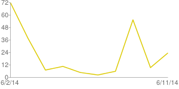 SUBTITLE(Please check the protocols you use curl/libcurl for)
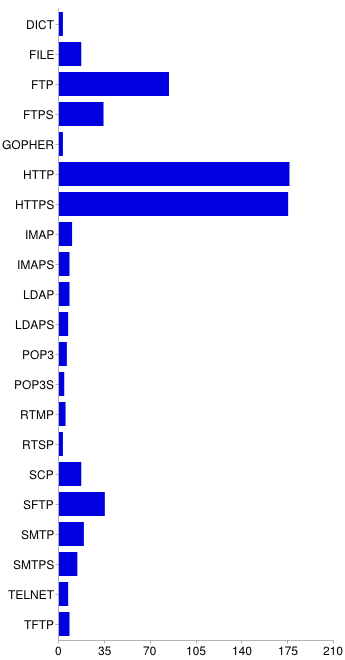
DICT 3 1.5% FILE 17 9% FTP 84 43% FTPS 34 18% GOPHER 3 1.5% HTTP 176 91% HTTPS 175 90% IMAP 10 5% IMAPS 8 4% LDAP 8 4% LDAPS 7 3.6% POP3 6 3% POP3S 4 2% RTMP 5 2.5% RTSP 3 1.5% SCP 17 9% SFTP 35 18% SMTP 19 10% SMTPS 14 7% TELNET 7 3.6% TFTP 8 4%
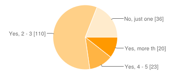
Yes, more than 5 20 11% Yes, 4 - 5 23 12% Yes, 2 - 3 110 58% No, just one 36 19%
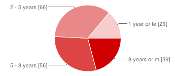
8 years or more 39 21% 5 - 8 years 56 30% 2 - 5 years 66 35% 1 year or less 26 14%
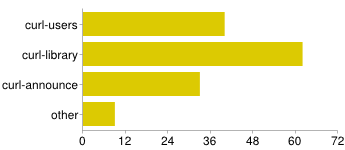
curl-users 40 28% curl-library 62 43% curl-announce 33 23% other 9 6%
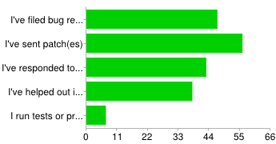
I've filed bug report(s) 47 25% I've sent patch(es) 56 29% I've responded to questions on mailing list / forums 43 23% I've helped out in other ways 38 20% I run tests or provide infrastructure 7 4%
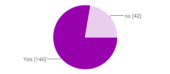
Yes 146 78% no 42 22%
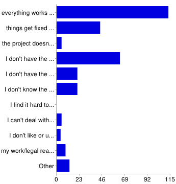
everything works to my satisfaction 113 58% things get fixed fast enough anyway 44 22% the project doesn't want my changes 5 3% I don't have the time 64 33% I don't have the energy 21 11% I don't know the programming languages used 21 11% I find it hard to work with the curl developers 0 0% I can't deal with the tools (git, make, diff etc) 5 3% I don't like or use email 4 2% my work/legal reasons prohibit me 9 5% Other 13 7%
1 - Really bad to 5 - Really good.
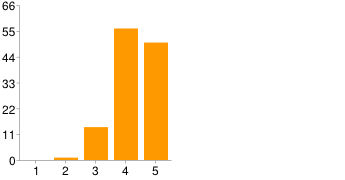
Patches 1 0 0% 2 1 1% 3 14 12% 4 56 46% 5 50 41%
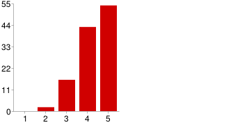
Bug reports 1 0 0% 2 2 2% 3 16 14% 4 43 37% 5 54 47%
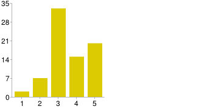
Female contributors and other minorities 1 2 3% 2 7 9% 3 33 43% 4 15 19% 5 20 26%
Attribution and giving credits 1 0 0% 2 0 0% 3 16 15% 4 27 25% 5 63 59%
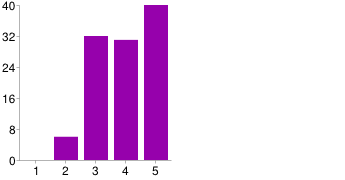
Helping newcomers to the project 1 0 0% 2 6 6% 3 32 29% 4 31 28% 5 40 37%
You could select up to 5 areas. The same areas and the same restriction was then on the subsequent question about what our "worst areas".
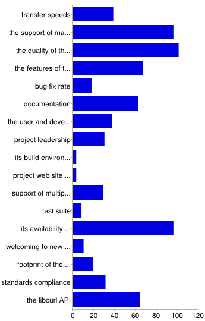
transfer speeds 39 20% the support of many protocols 96 49% the quality of the products, curl/libcurl 101 52% the features of the protocol implementations 67 34% bug fix rate 18 9% documentation 62 32% the user and developer community 37 19% project leadership 30 15% its build environment/setup 3 2% project web site and infrastructure 3 2% support of multiple SSL backends 29 15% test suite 8 4% its availability and functionality on many platforms 96 50% welcoming to new users and contributors 10 5% footprint of the library/executable 19 10% standards compliance 31 16% the libcurl API 64 33%
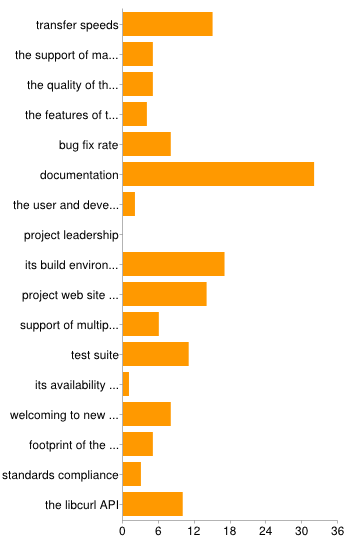
transfer speeds 15 8% the support of many protocols 5 3% the quality of the products, curl/libcurl 5 3% the features of the protocol implementations 4 2% bug fix rate 8 4% documentation 32 17% the user and developer community 2 1% project leadership 0 0% its build environment/setup 17 9% project web site and infrastructure 14 7% support of multiple SSL backends 6 3% test suite 11 6% its availability and functionality on many platforms 1 0.5% welcoming to new users and contributors 8 4% footprint of the library/executable 5 3% standards compliance 3 2% the libcurl API 10 5%
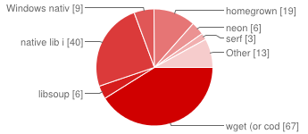
wget (or code ripped out from wget) 67 41% libsoup 6 4% native lib in Perl, Python, Java, etc 40 25% Windows native libs (wininet or the likes) 9 6% homegrown 19 12% neon 6 4% serf 3 2% Other 13 8%
Since this was a plain text field, I've parsed and edited the responses and then counted the number of times the same one occurred. Only a small portion of the participants filled in this field.